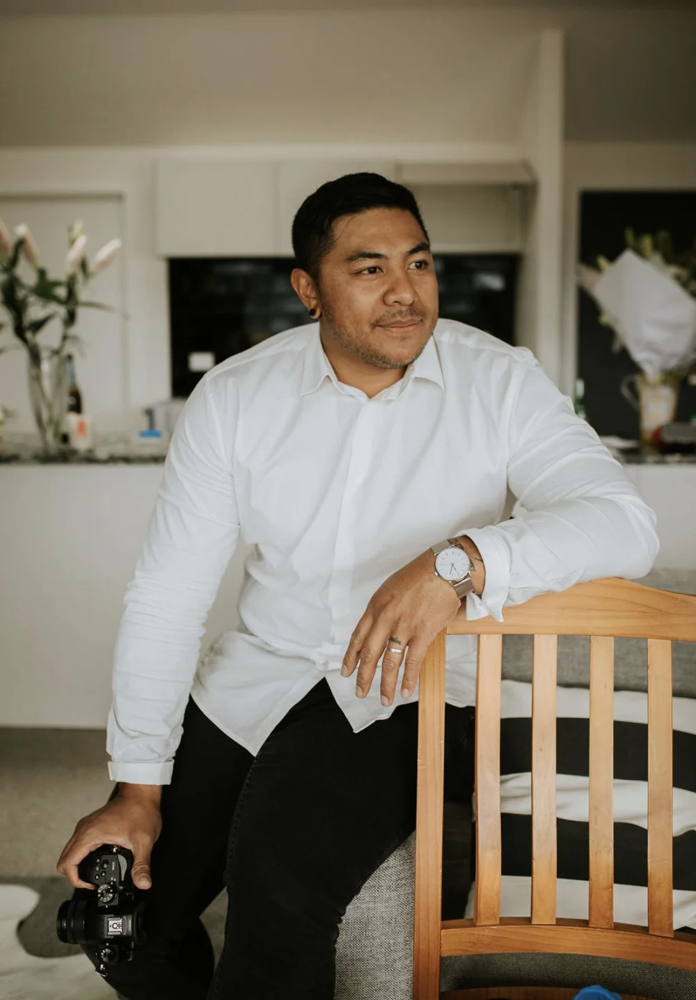

Why do I film?
- The short answer
-
It should read: 100 reasons why I film. I could say it simply brings me joy, but it is way more than that.
To capture yourself in time, then replay it and be taken back instantly. To bring back every emotion and every little connection. That is why I film.
- Travel
-
It is from my love of travel that I found my love for filming. The taste of the bruschetta in front of the Pantheon in Rome. The way my body shivered seeing snow for the first time, on top of the Jungfrau.
My wife Jessica and I love to travel. Through the videos we created, my goal was to inspire family and friends back home to experience the world, and to feel as if they were travelling with us.
- Ancestors
-
My family hails from Apia, Samoa, with lineage that stretches to Alsace-Lorraine in France, Stepney in London, China, Germany and more.
I wanted to stand in the footprints of my ancestors, and to see where this Samoan man could go next to throw the redeemer up.
- The café
-
A good friend reached out one day. He loved my travel videos and wanted one like that for his café. From there, I have never looked back.
From a hobby to what it is today, learning on the go and self-taught: special events, music videos, product and business promotions, and every milestone in between.
- Wedding day
-
My favourite moment to capture, without a doubt, is the moment the groom separates himself from the world. He sees the most beautiful person walking towards him, and only the two of them matter in that time and space.
- Aiga
-
I come from a family of seven: Mum, Dad, three brothers and baby sis. I am married to my best friend Jessica and we have a beautiful baby boy named Mateo.
Without the push of my family, I wouldn't be here pursuing what I love. Everything I do is for them.